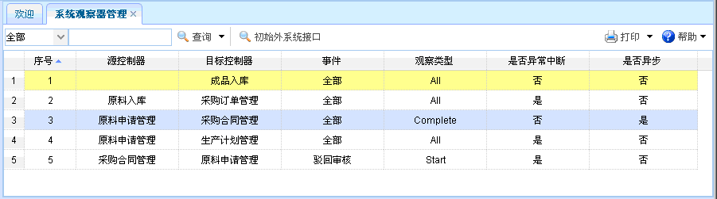

系统观察器管理
系统观察器管理
功能介绍：点击【系统观察器管理】，进入系统观察器管理页面，如下图所示。功能主要包括：查询、初始外系统接口。

图表1-xt5-1【系统观察器管理】
图表1-xt5-1【系统观察器管理】
【查询】：通过设置查询条件，查询出符合条件的系统观察器信息，直接点击查询按钮即可列出相关的系统观察器信息。
【初始外系统接口】：选中某项系统观察器信息后，点击初始外系统接口即可。
 常见问题
常见问题
1、？
2、？
3、？
系统观察器管理功能介绍：点击【系统观察器管理】，进入系统观察器管理页面，如下图所示。功能主要包括：查询、初始外系统接口。
【查询】：通过设置查询条件，查询出符合条件的系统观察器信息，直接点击查询按钮即可列出相关的系统观察器信息。
【初始外系统接口】：选中某项系统观察器信息后，点击初始外系统接口即可。
常见问题1、？
2、？
3、？